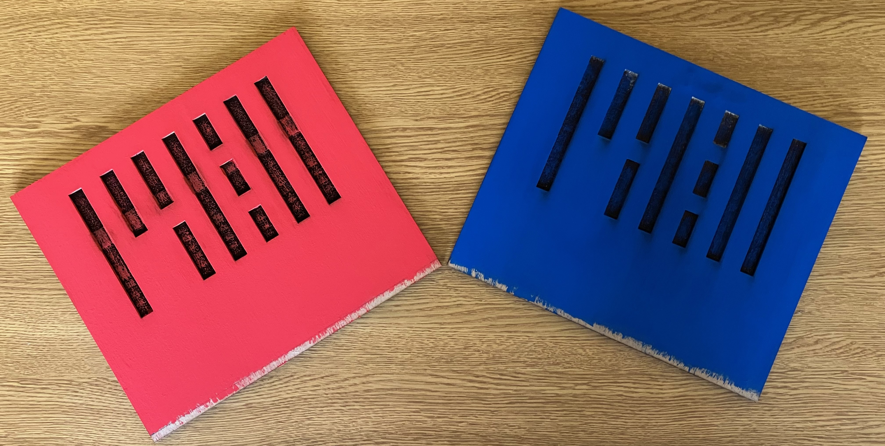
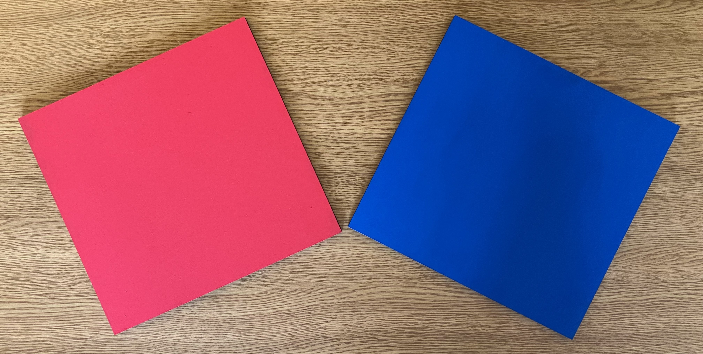
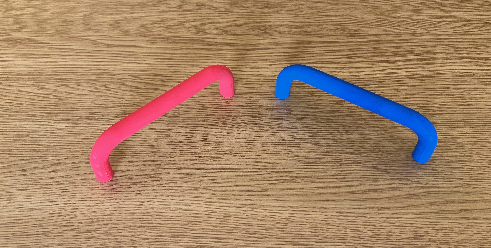
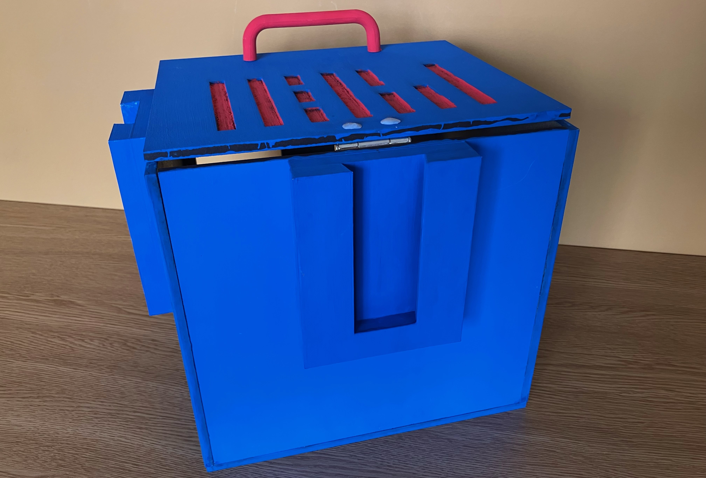

Parte final del proyecto

Pintado de piezas externas
Se le proporciona un pintado de dos manos a cada pieza por la cara externa para que el acabado sea superior. Principalmente se utiliza la brocha, pero para detalles o retoques se puede emplear un pincel de punta fina para no manchar otras partes. Ideal que la segunda mano sea después de 12 horas de secado, como se hizo en este caso.
Primer pintado de tapas
Consta de dos manos a cada pieza solamente por la cara externa sin tener cuidado en el texturizado ya que luego se detallará esa parte. Debido a un error en la medida respecto a la profundidad por el tema de la bisagra, no se pintó todo porque se iba a recortar 6 mm.
Pintado de piezas posteriores
Aquí se consideró el termino de la pieza porque no iba a ver ninguna modificación con respecto a la medida. Constó de dos manos de acabado a cada pieza.
Pintado de tiradores
Inicialmente vinieron en acrílico color blanco y debido al color utilizado en cada baúl, es que se decidió pintar del mismo color. Estas piezas si involucraron mayor cantidad de manos debido a que el acrílico no absorbe completamente la pintura. Se calcula una cantidad de seis manos por tirador dejando un lapso de 12 horas por cada dos manos de pintado.

Pintado de ranuras e instalación de tiradores
Una vez ya pintada la tapa de manera general, se procedió a pintar las ranuras con un pincel de pelo fino con el color opuesto al de la tapa. Luego del secado, se procedió a la instalación de los tiradores no sin antes realizar la medición de eje a eje entre los agujeros del mismo tirador, en este caso es de 96 mm. Se coloca una marca en la parte posterior de la tapa para no dañar el acabado y mediante una broca delgada se realizan los agujeros para que se pueda insertar la fijación.

Pintado de conectores y pegado sobre el baúl
Tanto conectores macho como hembra se pintan del mismo color que el baúl alrededor de cuatro manos por pieza debido al material del mismo conector que es plástico PLA. Una vez esté seca la pieza, se procede a medir en el baúl el centro para colocar el conector y así coincida con todos los lados. En ambas superficies se colocan marcas con lápiz para servir de referencia al momento de pegar.
Pegado de pieza trasera con conector hembra y tapa
Finalización del armado y pintado del cubo con la unión de estas piezas con el resto. La tapa está unida mediante una bisagra capuchina.

Colocación de cerámica en frío para ocultar puntas de tornillos
Debido a la profundidad del tornillo es que perfora la tapa del baúl y para evitar daños al manipular o falta de estética, se decidió tapar estos sobrantes mediante la cerámica en frío tratando de simular a un tapatornillo. Posteriormente se pasará a pintar del mismo color que la tapa para tratar de ocultar esto.

Fijación de conectores mediante tornillos
Colocación de un tornillo con cabeza plana para generar mayor agarre por parte del conector hacia el mismo baúl al momento de unirse con otro baúl y así evitar cualquier inconveniente al momento de cargar. Antes de colocar el tornillo, se puede ayudar de una punta broca para generar un agujero y así sea más fácil insertar la fijación.